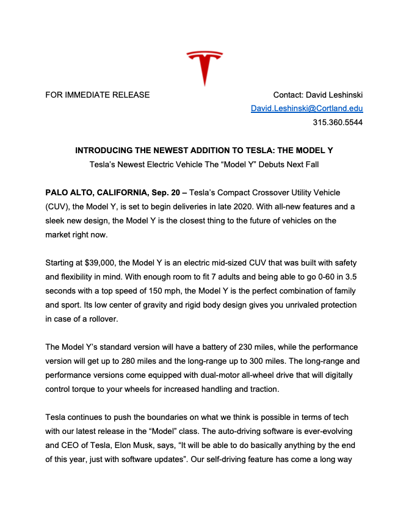
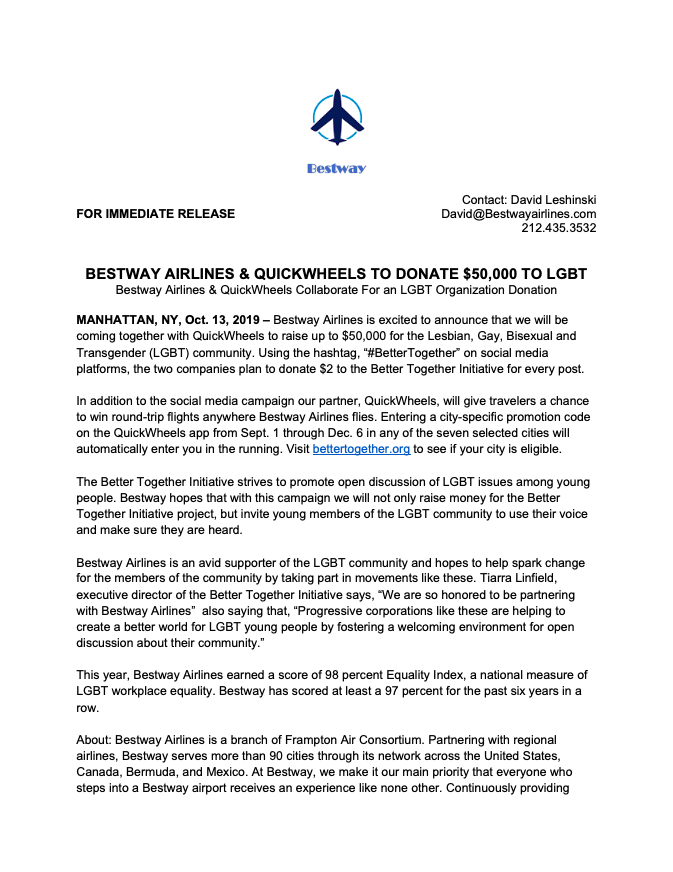

A website I built to support the BLM movement. The site is full of educational resources and black-owned products. It also utilizes HTML, CSS and Bootstrap 4 to create a responsive design. View the website here.

A practice website I built called "TinDog." This website utilized HTML, CSS and Bootstrap 4 to create a responsive design. View the website here.

A website I built used as a portfolio. This website utilized HTML, CSS and focussed primarily on asthetic. View the website here.

A website I built shortly after first using HTML & CSS. This was my first attempt at building a site on my own. It was my first portfolio but has been replaced by the site you are currently browsing. View the website here.

A website I built that displays my resume. This site was built solely with HTML. View the website here.
.jpg)
A media Kit & Pitch I created for WSUC 90.5, SUNY Cortland's radio club. The mdia kit was complied in a slide deck and filled with useful information about the club. The pitch was a marketing agency style mock pitch where i would offer them solutions to their social media and website issues. Design was a heavy focus in each slide deck. View the pdf here.

A 57 page screenplay I wrote from scratch in screenplay format. I utilized my research skills to ensure the plot was believable for the time period is was set in. View the pdf here.

A press release I wrote for Pinckney Hugo Group providing information on new hires at the agency. View the pdf here.

A press release I wrote in class on behalf of Tesla. The intend of the release was to give information about the features of the new "Model Y." View the pdf here.

A press release I wrote in class on an airline and a ride-sharing app coming toegther to donate $50,000 to an LGBT foundation. The goal of this release was to spread awarnesss of the cause. View the pdf here.